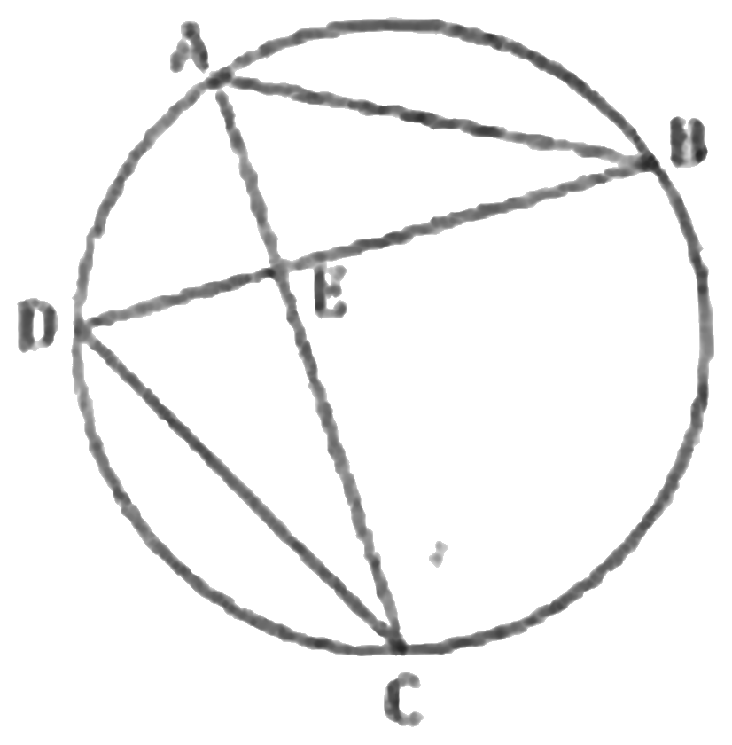

מקבץ 5
10 שאלות · עמודים 23–26 בספר

בסרטוט שלפניכם מעגל בו הועברו 4 מיתרים.
נתון: שטח המשולש DEC גדול פי 43 משטח משולש AEB. AE = 6 ס"מ.
לאור נתונים אלו ונתוני הסרטוט, מה אורכה של הצלע DE (בס"מ)?
הצגת הפתרון
התשובה הסופית3תשובה (3)4√3
דרך הפתרון והסבר
המיתרים AC ו־BD נחתכים ב־E. ∢BAC = ∢BDC (זוויות היקפיות על אותה קשת) ⇒ △AEB ∼ △DEC עם A↔D. יחס השטחים 43 ⇒ יחס הדמיון 2√3. DE = AE · 2√3 = 12√3 = 4√3.
מוקשים נפוצים
להתאים קודקודים לפי הזוויות השוות, לא לפי הסדר באותיות.
נבדקהפתרון תואם את מפתח התשובות של הספר.
x ≠ ±√5 , 1√5 + x + 1√5 − x = ?
הצגת הפתרון
התשובה הסופית4תשובה (4)√205 − x²
דרך הפתרון והסבר
מכנה משותף 5 − x²: √5 − x + √5 + x5 − x² = 2√55 − x² = √205 − x².
מוקשים נפוצים
2√5 = √20.
נבדקהפתרון תואם את מפתח התשובות של הספר.
נתון: |x| = |x − 4| , |y| = |y + 3|
x − y = ?
הצגת הפתרון
התשובה הסופית4תשובה (4)3½
דרך הפתרון והסבר
|x| = |x − 4| ⇒ x באמצע בין 0 ל־4 ⇒ x = 2. |y| = |y + 3| ⇒ y = −1.5. x − y = 3.5.
מוקשים נפוצים
|x| = |x − a| פירושו x באמצע בין 0 ל־a, לא x = a.
נבדקהפתרון תואם את מפתח התשובות של הספר.
המרחק בין A ל־B הוא x ק"מ, והמרחק בין B ל־C הוא 2x ק"מ.
איתן רץ מ־A ל־B במהירות של 10 קמ"ש. לאחר מכן המשיך ללא הפסקה ל־C במהירות של 5 קמ"ש. זמן הריצה הכולל של איתן היה שעה וחצי.
כמה זמן נמשכה ריצתו של איתן מ־A ל־B?

הצגת הפתרון
התשובה הסופית3תשובה (3)18 דקות
דרך הפתרון והסבר
x10 + 2x5 = 1.5 ⇒ x10 + 4x10 = x2 = 1.5 ⇒ x = 3. הזמן מ־A ל־B: 310 שעה = 18 דקות.
מוקשים נפוצים
לשים לב שהמהירויות שונות בשני הקטעים ושהתשובה בדקות.
נבדקהפתרון תואם את מפתח התשובות של הספר.
a ו־b הם מספרים ראשוניים. נתון: a·b·(a·b − 7) = 120
a + b = ?
הצגת הפתרון
התשובה הסופית2תשובה (2)8
דרך הפתרון והסבר
נסמן t = ab: t² − 7t − 120 = 0 ⇒ t = 15 (או −8). 15 = 3 · 5 ⇒ a + b = 8.
מוקשים נפוצים
לפתור את המשוואה הריבועית ב־t = ab ולפסול את הפתרון השלילי.
נבדקהפתרון תואם את מפתח התשובות של הספר.
A ו־B הן אותיות המייצגות מספרים עוקבים מ־1 עד 9. נתון: B < A
ABB − BBA = ?
הצגת הפתרון
התשובה הסופית3תשובה (3)99
דרך הפתרון והסבר
ABB − BBA = (100A + 11B) − (110B + A) = 99(A − B) = 99, כי A = B + 1.
מוקשים נפוצים
A ו־B עוקבים ו־A גדול ⇒ A − B = 1, לא −1.
נבדקהפתרון תואם את מפתח התשובות של הספר.

בסרטוט שלפניכם ABCD מלבן ו־AEF משולש שווה צלעות.
נתון: BE = ⅓AD
על פי נתונים אלו ונתוני הסרטוט, שטח משולש AEFשטח מלבן ABCD = ?
הצגת הפתרון
התשובה הסופית3תשובה (3)13
דרך הפתרון והסבר
AB הוא הגובה במשולש שווה הצלעות, ו־BE חצי צלע. BE = ⅓AD ⇒ AB = √3·BE = AD√3. שטח המשולש = AB · BE = AD²3√3. שטח המלבן = AB · AD = AD²√3. היחס = 13.
מוקשים נפוצים
BE היא חצי צלע של המשולש השווה צלעות, לא צלע שלמה.
נבדקהפתרון תואם את מפתח התשובות של הספר.
תשובה (1) מטושטשת בסרטון; החישוב תואם את (3).
משקלה הממוצע של סלסלת עגבניות שרי בסופרמרקט הוא 1.25 ק"ג. אראל בדק רבע מהסלסלות וגילה כי משקלן הממוצע הוא 1.22 ק"ג.
מה משקלן הממוצע של שאר סלסלות עגבניות השרי בסופרמרקט?
הצגת הפתרון
התשובה הסופית1תשובה (1)1.26 ק"ג
דרך הפתרון והסבר
1.25 = ¼ · 1.22 + ¾ · m ⇒ ¾m = 1.25 − 0.305 = 0.945 ⇒ m = 1.26.
מוקשים נפוצים
ממוצע משוקלל: הרבע שנבדק מקבל משקל ¼, לא ½.
נבדקהפתרון תואם את מפתח התשובות של הספר.
x הוא מספר טבעי המתחלק ב־6 עם שארית 4. y הוא מספר טבעי המתחלק ב־6 עם שארית 3.
איזה מהביטויים הבאים מתחלק ב־6 ללא שארית?
הצגת הפתרון
התשובה הסופית4תשובה (4)xy
דרך הפתרון והסבר
x ≡ 4, y ≡ 3 (מודולו 6) ⇒ xy ≡ 12 ≡ 0. לכן xy מתחלק ב־6.
מוקשים נפוצים
(1) ≡ 5, (2) x²y ≡ 48 ≡ 0 ⇒ +1 ≡ 1, (3) y²x ≡ 36 ≡ 0 ⇒ +2 ≡ 2.
נבדקהפתרון תואם את מפתח התשובות של הספר.
כמה מספרים ארבע־ספרתיים, הגדולים מ־4,300, ניתן ליצור באמצעות הספרות 0, 3, 4, 5, 7, 8, אם ידוע שניתן להשתמש בכל אחת מהספרות פעם אחת בלבד?
הצגת הפתרון
התשובה הסופית3תשובה (3)228
דרך הפתרון והסבר
ספרה ראשונה 5, 7 או 8: 3 · 5 · 4 · 3 = 180. ספרה ראשונה 4: הספרה השנייה חייבת להיות 3, 5, 7 או 8 (אחרת המספר קטן מ־4,300), ואחריה 4 · 3 = 12 אפשרויות ⇒ 4 · 12 = 48. סה"כ 180 + 48 = 228.
מוקשים נפוצים
כשהמספר מתחיל ב־4 אסור לספור את האפשרות שהספרה השנייה היא 0.
נבדקהפתרון תואם את מפתח התשובות של הספר.
אין במקבץ הזה שאלות שמתאימות לסינון.
אחרי ההגשה תראו ציון, זמן ופתרון מלא לכל שאלה.